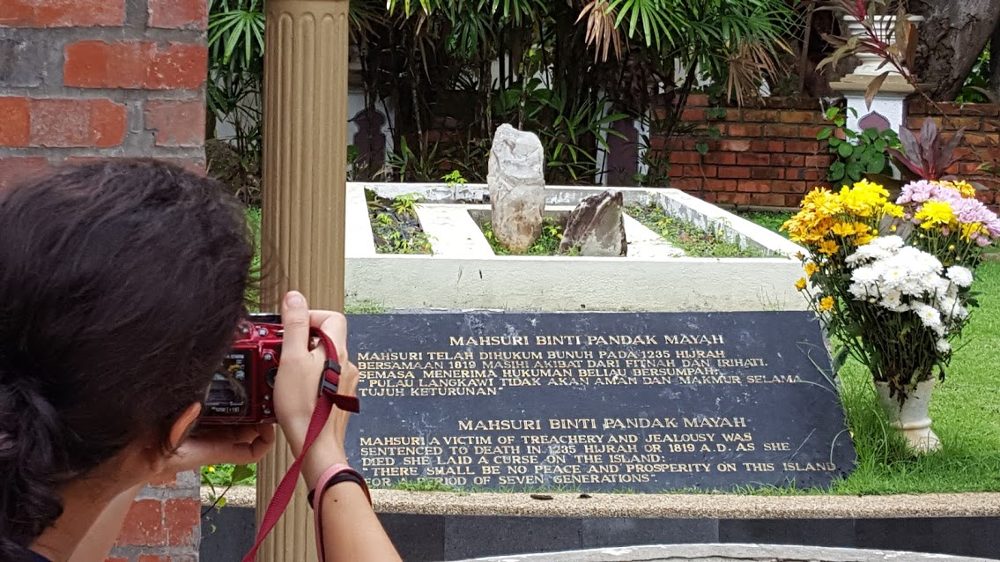

Enjoying a bike ride upon arrival to Kuala Lumpur, Malaysia

In July of 2016 my family went to Malaysia to sightsee and to visit my wife's side of the family. It was our first trip as a family to Malaysia. Here are my daughters Maya and Sofia enjoy a quick motorbike ride with their grandfather.
Trip to Langkawi
Not long after we arrived in Malaysia we took a short plane ride to Langkawi on a trip within a trip.
In Langkawi one of the place's we visted was Mahsuri's grave site. Mahsuri was a woman who live in Langkawi near the end of the 18th century. As the legend goes, while her husband was away at war, jealous women in the village accused her of adultery. She was found guilty and executed with her families keras(a dagger of sorts). While she lay dying, it was told that instead of blood white liquid flowed from her wound, signifying her innocence. While she lay dying she cursed Langkawi for seven generations for what they had done. It wasn't until after this time had passed, did Langkawi prosper as a tourist destination.
Trip to Melaka
In our trip to Melaka, one of the places we visted is the "A Famosa". The "A Famosa " was a 16th century fortess built by the Portugese when they occupied Melaku. The photos I took depicted the top-front of the "Porta de Santiago", which is a small gate house and the other photo is the inside of the reminants of a Portuguese Church. If you like to read more about the "A Famosa", click on this link. A Famosa